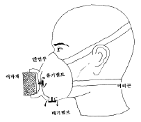
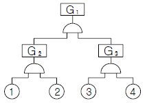
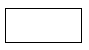
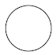
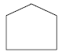
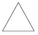
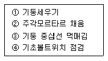
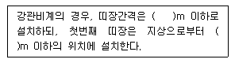
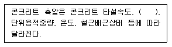

건설안전산업기사 (2014-05-25 기출문제)
1과목: 산업안전관리론
1. 다음 중 일반적인 안전관리 조직의 기본 유형으로 볼 수 없는 것은?
- line system
- staff system
- safety system
- line-staff system
(정답률: 80%)

2. 다음 중 적성배치시 작업자의 특성과 가장 관계가 적은 것은?
- 연령
- 작업조건
- 태도
- 업무경력
(정답률: 63%)
3. 다음 중 안전 태도 교육의 원칙으로 적절하지 않은 것은?
- 적성 배치를 한다.
- 이해하고 납득한다.
- 항상 모범을 보인다.
- 지적과 처벌 위주로 한다.
(정답률: 80%)
4. 연평균 1000명의 근로자를 채용하고 있는 사업장에서 연간 24명의 재해자가 발생하였다면 이 사업장의 연천인율은 얼마인가? (단, 근로자는 1일 8시간씩 연간 300일을 근무한다.)
- 10
- 12
- 24
- 48
(정답률: 48%)
5. 다음 중 산업재해로 인한 재해손실비 산정에 있어 하인리히의 평가방식에서 직접비에 해당하지 않는 것은?
- 통신급여
- 유족급여
- 간병급여
- 직업재활급여
(정답률: 73%)
6. 다음 중 산업안전보건법령상 안전⋅보건표지의 용도 및 사용 장소에 대한 표지의 분류가 가장 올바른 것은?
- 폭발성 물질이 있는 장소 : 안내표지
- 비상구가 좌측에 있음을 알려야 하는 장소 : 지시표지
- 보안경을 착용해야만 작업 또는 출입을 할 수 있는 장소 : 안내표지
- 정리⋅정돈 상태의 물체나 움직여서는 안 될 물체를 보존하기 위하여 필요한 장소 : 금지표지
(정답률: 65%)
7. 하인리히의 재해발생 5단계 이론 중 재해 국소화 대책은 어느 단계에 대비한 대책인가?
- 제1단계 → 제2단계
- 제2단계 → 제3단계
- 제3단계 → 제4단계
- 제4단계 → 제5단계
(정답률: 51%)
8. 다음 중 [그림]에 나타난 보호구의 명칭으로 옳은 것은?

- 격리식 반면형 방독마스크
- 직결식 반면형 방진마스크
- 격리식 전면형 방독마스크
- 안면부여과식 방진마스크
(정답률: 71%)
9. 다음 중 매슬로우의 욕구위계 5단계 이론을 올바르게 나열한 것은?
- 생리적 욕구 (→)사회적 욕구 (→)안전의 욕구 (→) 존경의 욕구 (→)자아실현의 욕구
- 안전의 욕구 (→)생리적 욕구 (→)사회적 욕구 (→) 존경의 욕구 (→)자아실현의 욕구
- 생리적 욕구 (→)안전의 욕구 (→)사회적 욕구 (→) 존경의 욕구 (→)자아실현의 욕구
- 사회적 욕구 (→)생리적 욕구 (→)안전의 욕구 (→) 자아실현의 욕구 (→)존경의 욕구
(정답률: 76%)
10. 안전교육의 방법 중 TWI(Training Within Industry forsupervisor)의 교육내용에 해당하지 않는 것은?
- 작업지도기법(JIT)
- 작업개선기법(JMT)
- 작업환경 개선기법(JET)
- 인간관계 관리기법(JRT)
(정답률: 53%)
11. 작업장에서 매일 작업자가 작업 전, 중, 후에 시설과 작업동작 등에 대하여 실시하는 안전점검의 종류를 무엇이라하는가?
- 정기점검
- 일상점검
- 임시점검
- 특별점검
(정답률: 79%)
12. 다음 중 재해조사시 유의사항으로 가장 적절하지 않은 것은?
- 가급적 재해 현장이 변형되지 않은 상태에서 실시한다.
- 목격자가 제시한 사실 이외의 추측되는 말은 정밀 분석한다.
- 과거 사고 발생 경향 등을 참고하여 조사한다.
- 객관적 입장에서 재해방지에 우선을 두고 조사한다.
(정답률: 71%)
13. 산업안전보건법령상 사업 내 안전⋅보건교육에 있어 “채용 시의 교육 및 작업내용 변경 시의 교육 내용”에 해당 하지 않는 것은? (단, 산업안전보건법 및 일반관리에 관한 사항은 제외한다.)
- 물질안전보건자료에 관한 사항
- 사고 발생시 긴급조치에 관한 사항
- 작업 개시 전 점검에 관한 사항
- 표준안전작업방법 및 지도 요령에 관한 사항
(정답률: 38%)
14. 적응기제(Adjustment Mechanism) 중 방어적 기제(Defence Mechanism)에 해당하는 것은?
- 고립(Isolation)
- 퇴행(Regression)
- 억압(Suppression)
- 합리화(Rationalization)
(정답률: 68%)
15. 다음 중 사고의 위험이 불안전한 행위 외에 불안전한 상태에서도 적용된다는 것과 가장 관계가 있는 것은?
- 이념성
- 개인차
- 부주의
- 지능성
(정답률: 70%)
16. 다음 중 기억과 망각에 관한 내용으로 틀린 것은?
- 학습된 내용은 학습 직후의 망각률이 가장 낮다.
- 의미없는 내용은 의미있는 내용보다 빨리 망각한다.
- 사고력을 요하는 내용이 단순한 지식보다 기억, 파지의 효과가 높다.
- 연습은 학습한 직후에 시키는 것이 효과가 있다.
(정답률: 55%)
17. 다음 중 안전교육의 4단계를 올바르게 나열한 것은?
- 도입 → 확인 → 제시 → 적용
- 도입 → 제시 → 적용 → 확인
- 확인 → 제시 → 도입 → 적용
- 제시 → 확인 → 도입 → 적용
(정답률: 68%)
18. 다음 중 무재해운동에서 실시하는 위험예지훈련에 관한 설명으로 틀린 것은?
- 근로자 자신이 모르는 작업에 대한 것도 파악하기 위하여 참가집단의 대상범위를 가능한 넓혀 많은 인원이 참가토록 한다.
- 직장의 팀워크로 안전을 전원이 빨리 올바르게 선취 하는 훈련이다.
- 아무리 좋은 기법이라도 시간이 많이 소요되는 것은 현장에서 큰 효과가 없다.
- 정해진 내용의 교육보다는 전원의 대화방식으로 진행한다.
(정답률: 55%)
19. 재해예방의 4원칙 중 대책선정의 원칙에서 관리적 대책에 해당되지 않는 것은?
- 안전교육 및 훈련
- 동기부여와 사기 향상
- 각종 규정 및 수칙의 준수
- 경영자 및 관리자의 솔선수범
(정답률: 42%)
20. 다음 중 리더가 가지고 있는 세력의 유형이 아닌 것은?
- 전문세력(expert power)
- 보상세력(reward power)
- 위임세력(entrust power)
- 합법세력(legitimate power)
(정답률: 56%)
2과목: 인간공학 및 시스템안전공학
21. 인간 오류의 분류에 있어 원인에 의한 분류 중 작업의 조건이나 작업의 형태 중에서 다른 문제가 생겨 그 때문에 필요한 사항을 실행할 수 없는 오류(error)를 무엇이라 하는가?
- secondary error
- primary error
- command error
- commission error
(정답률: 55%)
22. 일반적으로 스트레스로 인한 신체반응의 척도 가운데 정신적 작업의 스트레인 척도와 가장 거리가 먼 것은?
- 뇌전도
- 부정맥지수
- 근전도
- 심박수의 변화
(정답률: 58%)
23. 다음 중 인간공학에 관련된 설명으로 옳지 않은 것은?
- 인간의 특성과 한계점을 고려하여 제품을 변경한다.
- 생산성을 높이기 위해 인간의 특성을 작업에 맞추는 것이다.
- 사고를 방지하고 안전성과 능률성을 높일 수 있다.
- 편리성, 쾌적성, 효율성을 높일 수 있다.
(정답률: 70%)
24. 다음과 같이 ①~④의 기본사상을 가진 FT도에서 minimal cut set 으로 옳은 것은?

- {①, ②, ③, ④}
- {①, ③,④}
- {①, ② }
- {③, ④}
(정답률: 70%)
25. 다음 중 조도의 단위에 해당하는 것은?
- fL
- diopter
- lumen/m2
- lumen
(정답률: 57%)
26. 다음 중 불대수(Boolean algebra)의 관계식으로 옳은 것은?
- A(AㆍB) = B
- A + B = AㆍB
- A + AㆍB = AㆍB
- (A + B)(A + C) = A + BㆍC
(정답률: 58%)
27. 2개 공정의 소음수준 측정 결과 1공정은 100dB에서 2시간, 2공정은 90dB에서 1시간 소요될 때 총 소음량(TND)과 소음설계의 적합성을 올바르게 나열한 것은? (단, 우리나라는 90dB에 8시간 노출될 때를 허용기준으로 하며, 5dB 증가할 때 허용시간은 1/2로 감소되는 법칙을 적용한다.)
- TND = 0.83, 적합
- TND = 0.93, 적합
- TND = 1.03, 적합
- TND = 1.13, 부적합
(정답률: 28%)
28. 다음 중 시스템 안전의 최종분석 단계에서 위험을 고려하는 결정인자가 아닌 것은?
- 효율성
- 피해가능성
- 비용산정
- 시스템의 고장모드
(정답률: 33%)
29. 시스템이 저장되고 이동되고, 실행됨에 따라 발생하는 작동시스템의 기능이나 과업, 활동으로부터 발생되는 위험에 초점을 맞추어 진행하는 위험분석방법은?
- FHA
- OHA
- PHA
- SHA
(정답률: 45%)
30. 다음 중 인체계측에 관한 설명으로 틀린 것은?
- 의자, 피복과 같이 신체모양과 치수와 관련성이 높은 설비의 설계에 중요하게 반영된다.
- 일반적으로 몸의 측정 치수는 구조적 치수(structural dimension)와 기능적 치수(functional dimension)로 나눌 수 있다.
- 인체계측치의 활용시에는 문화적 차이를 고려하여야한다.
- 인체계측치를 활용한 설계는 인간의 안락에는 영향을 미치지만 성능수행과는 관련성이 없다.
(정답률: 64%)
31. 품질 검사 작업자가 한 로트에서 검사 오류를 범할 확률이 0.1이고, 이 작업자가 하루에 5개의 로트를 검사한다면, 5개 로트에서 에러를 범하지 않을 확률은?
- 90%
- 75%
- 59%
- 40%
(정답률: 34%)
32. 다음 중 얼음과 드라이아이스 등을 취급하는 작업에 대한 대책으로 적절하지 않은 것은?
- 더운 물과 더운 음식을 섭취한다.
- 가능한 한 식염을 많이 섭취한다.
- 혈액순환을 위해 틈틈이 운동을 한다.
- 오랫동안 한 장소에 고정하여 작업하지 않는다.
(정답률: 68%)
33. 다음 중 망막의 원추세포가 가장 낮은 민감성을 보이는 파장의 색은?
- 적색
- 회색
- 청색
- 녹색
(정답률: 57%)
34. 다음 중 작업방법의 개선원칙(ECRS)에 해당되지 않는 것은?
- 교육(Education)
- 결합(Combine)
- 재배치(Rearrange)
- 단순화(Simplify)
(정답률: 34%)
35. 다음 중 시스템 안전성 평가 기법에 관한 설명으로 틀린 것은?
- 가능성을 정량적으로 다룰 수 있다.
- 시각적 표현에 의해 정보전달이 용이하다.
- 원인, 결과 및 모든 사상들의 관계가 명확해진다.
- 연역적 추리를 통해 결함사상을 빠짐없이 도출하나, 귀납적 추리로는 불가능하다.
(정답률: 65%)
36. 다음 중 시스템의 수명곡선(욕조곡선)에서 우발고장 기간에 발생하는 고장의 원인으로 볼 수 없는 것은?
- 사용자의 과오 때문에
- 안전계수가 낮기 때문에
- 부적절한 설치나 시동 때문에
- 최선의 검사방법으로도 탐지되지 않는 결함 때문에
(정답률: 34%)
37. 정보를 전송하기 위한 표시장치 중 시각장치보다 청각 장치를 사용해야 더 좋은 경우는?
- 메시지가 나중에 재참조되는 경우
- 직무상 수신자가 자주 움직이는 경우
- 메시지가 공간적인 위치를 다루는 경우
- 수신자가 청각계통이 과부하상태인 경우
(정답률: 65%)
38. FT도에 사용되는 기호 중 “시스템의 정상적인 가동상태에서 일어날 것이 기대되는 사상”을 나타내는 것은?




(정답률: 48%)
39. 다음 중 통제표시비(control/display ratio)를 설계할 때 고려하는 요소에 관한 설명으로 틀린 것은?
- 계기의 조절시간이 짧게 소요되도록 계기의 크기(size)는 항상 작게 설계한다.
- 짧은 주행 시간 내에 공차의 인정범위를 초과하지 않는 계기를 마련한다.
- 목시거리(目示距離)가 길면 길수록 조절의 정확도는 떨어진다.
- 통제표시비가 낮다는 것은 민감한 장치라는 것을 의미한다.
(정답률: 64%)
40. 인간공학의 중요한 연구과제인 계면(interface)설계에 있어서 다음 중 계면에 해당되지 않는 것은?
- 작업공간
- 표시장치
- 조종장치
- 조명시설
(정답률: 52%)
3과목: 건설시공학
41. 공사 감리자에 대한 설명 중 틀린 것은?
- 시공계획의 검토 및 조언을 한다.
- 문서화된 품질관리에 대한 지시를 한다.
- 품질하자에 대한 수정방법을 제시한다.
- 건축의 형상, 구조, 규모 등을 결정한다.
(정답률: 74%)
42. 건설공사 완료 후 부실 시공부분에 재시공을 보장하기 위하여 공사발주처 등에 예치하는 공사금액의 명칭은?
- 입찰보증금
- 계약보증금
- 지체보증금
- 하자보증금
(정답률: 80%)
43. 거푸집 존치기간 결정요인과 가장 거리가 먼 것은?
- 시멘트의 종류
- 골재의 밀도
- 구조물 부위
- 기온
(정답률: 62%)
44. V.E(Value Engineering)에서 원가절감을 실현할 수 있는 대상 선정이 잘못된 것은?
- 수량이 많은 것
- 반복효과가 큰 것
- 장시간 사용으로 숙달된 것
- 내용이 간단한 것
(정답률: 62%)
45. 파해쳐진 흙을 담아 올리거나 이동하는데 사용하는 기계로 쇼벨, 버킷을 장착한 트랙터 또는 크롤러 형태의 기계는?
- 불도저
- 앵글도저
- 로더
- 파워쇼벨
(정답률: 60%)
46. 철골공사와 직접적으로 관련된 용어가 아닌 것은?
- 토크렌치
- 너트 회전법
- 적산온도
- 스터드 볼트
(정답률: 73%)
47. 민간자본 유치방식 중 간접시설을 설계, 시공한 후 소유권을 발주자에게 이양하고, 투자자는 일정기간 동안 시설물의 운영권을 행사하는 계약방식은?
- BOT(Build Operate Transfer)
- BTO(Build Transfer Operate)
- BOO(Build Operate Own)
- BTL(Build Transfer Lease)
(정답률: 61%)
48. 철골공사의 접합방법 중 용접시공에 관한 사항으로 틀린 것은?
- 항상 용접열의 분포가 균등하도록 조치하고 일시에 다량의 열이 한 곳에 집중되지 않도록 해야 한다.
- 용접자세는 가능한 한 회전지그를 이용하여 아래보기 또는 수평자세로 한다.
- 아크 발생은 필히 용접부 내에서 일어나도록 해야 한다.
- 부재이음에 용접과 볼트를 불가피하게 병용할 경우에 는 볼트를 조인 후에 용접하는 것을 원칙으로 한다.
(정답률: 55%)
49. 건설업법에 의한 공사계약서에 포함해야 할 사항이 아닌 것은?
- 공사내용
- 공사착수의 시기
- 공법분석내용
- 공사대금 지불방법
(정답률: 58%)
50. KS L 5201(포틀랜드 시멘트)에 규정되어 있는 포틀랜드 시멘트의 종류가 아닌 것은?
- 중용열 포틀랜드 시멘트
- 고로 포틀랜드 시멘트
- 조강 포틀랜드 시멘트
- 내황산염 포틀랜드 시멘트
(정답률: 50%)
51. 도급계약 방식 중 주문받은 건설업자가 대상계획의 기업⋅금융, 토지조달, 설계, 시공, 기계기구 설치 등 주문자가 필요로 하는 모든 것을 조달하여 주문자에게 인도하는 도급계약 방식은?
- 공동도급
- 실비정산 보수가산도급
- 턴키(turn-key)도급
- 일식도급
(정답률: 74%)
52. 철골구조물에 콘크리트슬래브를 설치하기 위한 구조재료로서 거푸집을 대용할 수 있는 것은?
- 액세스플로어(access floor)
- 데크 플레이트(deck plate)
- 커튼 월(curtain wall)
- 익스팬션 조인트(expansion joint)
(정답률: 65%)
53. 주로 해안구조물과 교량의 상판, 난간벽체 등의 지지구조물, 내구성이 요구되는 건축물 등에 쓰이며, 탄소강 철근에 비해 내식성이 5~10배 정도 좋은 철근은?
- 스테인리스철근
- 일반 이형철근
- 일반 원형철근
- 고강도 이형철근
(정답률: 65%)
54. 콘크리트를 타설하는 데 사용하는 것으로 콘크리트가 흘러내려 가는 유도로로서, 길이는 가능한 짧게 또 굴곡이 없도록 하며 된비빔 콘크리트에서는 사용하기 어려운 것은?
- 버킷
- 호퍼
- 슈트
- 카트
(정답률: 53%)
55. 철근콘크리트공사에서의 철근이음에 대한 설명 중 틀린 것은?
- 철근의 이음위치는 되도록 응력이 큰 곳은 피한다.
- 일반적으로 이음을 할 때는 한 곳에서 철근 수의 반이상을 이어야 한다.
- 철근이음에는 겹침이음, 용접이음, 기계적이음 등이 있다.
- 철근이음은 힘의 전달이 연속적이고, 응력집중 등 부작용이 생기지 않아야 한다.
(정답률: 73%)
56. 콘크리트 공사에서 발생하는 결함이라고 보기 어려운 것은?
- 재료분리의 발생
- 콜드조인트의 발생
- 컨스트럭션 조인트의 발생
- 동해에 의한 콘크리트 강도 저하
(정답률: 45%)
57. 철골기둥세우기의 순서를 올바르게 나열한 것은?

- ③ - ④ - ① - ②
- ③ - ① - ④ - ②
- ② - ③ - ① - ④
- ② - ③ - ④ - ①
(정답률: 55%)
58. 공동도급(Joint Venture Contract)의 이점이 아닌 것은?
- 융자력의 증대
- 위험부담의 분산
- 기술의 확충, 강화 및 경험의 증대
- 이윤의 증대
(정답률: 72%)
59. 흙막이벽 자체의 휨 강성과 밑넣기 부분의 가로저항에 의해 주동토압을 부담시키고 굴착하는 흙막이 공법은?
- 버팀대식 공법
- 자립식 공법
- 앵커방식 공법
- 강재 널말뚝 공법
(정답률: 32%)
60. 연약한 점토질 지반에서 진흙의 점착력을 판별하는 토질 시험은?
- 표준관입시험
- 지내력도시험
- 보링
- 베인테스트
(정답률: 61%)
4과목: 건설재료학
61. 목재의 자연건조 시 주의사항으로 틀린 것은?
- 건조시간의 절약을 위해 가능한 한 마구리를 노출한다.
- 목재 상호간의 간격을 충분히 하고 지면에서는 20cm 이상 높이의 굄목을 놓고 쌓는다.
- 건조를 균일하게 하기 위해 때때로 상하 좌우로 환적한다.
- 뒤틀림을 막기 위해 오림목을 고루 괴어둔다.
(정답률: 72%)
62. 콘크리트 배합설계에 있어서 기준이 되는 골재의 함수 상태는?
- 절건상태
- 기건상태
- 표건상태
- 습윤상태
(정답률: 68%)
63. 강재의 경우 저온에서 인장할 때 또는 결함부가 있게 되면 연신율과 단면수축률이 없이 파단되는 현상을 무엇이라 하는가?
- 연성파괴
- 취성파괴
- 청열취성
- 저온취성
(정답률: 50%)
64. 매스콘크리트에서 균열제어를 하기 위한 대책으로 틀린 것은?
- 콘크리트의 온도상승을 적게 한다.
- 굵은 골재의 최대치수는 건조수축 등을 고려하여 되도록 작은 값을 사용한다.
- 급격한 온도 변화를 피한다.
- 저발열성 시멘트를 사용한다.
(정답률: 65%)
65. 주철의 최대 장점인 주조성을 가지며 또한 결점인 취성을 제거하여 강과 같이 단조할 수 있는 제품으로 듀벨, 창호철물, 파이프 등에 사용되는 것은?
- 고급주철
- 강성주철
- 가단주철
- 백주철
(정답률: 37%)
66. 아스팔트는 온도에 의한 반죽질기가 현저하게 변화하는데 이러한 변화가 일어나기 쉬운 정도를 무엇이라 하는가?
- 감온성
- 침입도
- 신도
- 연화성
(정답률: 55%)
67. 화성암에 속하지 않는 석재는?
- 화강암
- 현무암
- 안산암
- 사암
(정답률: 56%)
68. 석회암이 열에 약한 이유로 가장 타당한 것은?
- 석재내부에서 발생하는 열압력에 의한 균열 때문이다.
- 조암광물의 열팽창계수의 차이 때문이다.
- 조암광물의 융점의 차이 때문이다.
- 주성분이 열분해되기 때문이다.
(정답률: 42%)
69. 구리와 주석의 합금으로 내식성이 크며 주조하기 쉽고 표면에 특유의 아름다운 청록색을 가지고 있어 건축장식철 물 또는 미술공예 재료에 사용되는 것은?
- 황동
- 청동
- 양은
- 적동
(정답률: 76%)
70. 펄라이트 모르타르 바름에 대한 설명으로 틀린 것은?
- 재료는 진주암 또는 흑요석을 소성 팽창시킨 것이다.
- 펄라이트는 비중 0.3 정도의 백색입자이다.
- 내화피복재 바름으로 쓰인다.
- 균열이 거의 발생하지 않는다.
(정답률: 50%)
71. 재료의 단열성에 영향을 미치는 요인이 아닌 것은?
- 재료의 두께
- 재료의 밀도
- 재료의 강도
- 재료의 표면상태
(정답률: 52%)
72. 합판(plywood)의 특성에 관한 설명 중 틀린 것은?
- 방향성이 있다.
- 신축변형이 적다.
- 흡음효과를 낼 수 있다.
- 곡면가공시에도 균열이 적다.
(정답률: 48%)
73. 석고플라스터 미장재료에 대한 설명으로 옳지 않은 것은?
- 응결시간이 길고, 건조수축이 크다.
- 가열하면 결정수를 방출하므로 온도상승이 억제된다.
- 물에 용해되므로 물과 접촉하는 부위에서의 사용은 부적합하다.
- 일반적으로 소석고를 주성분으로 한다.
(정답률: 45%)
74. 시멘트의 분말도가 클수록 나타나는 특징에 해당하지 않는 것은?
- 수화작용이 촉진된다.
- 초기강도가 증대된다.
- 풍화작용이 억제된다.
- 초기에 균열이 많이 발생한다.
(정답률: 50%)
75. 재료가 외력을 받으면서 발생하는 변형에 저항하는 정도를 나타내는 것은?
- 가소성
- 강성
- 취성
- 좌굴
(정답률: 50%)
76. 콘크리트의 워커빌리티에 영향을 줄 수 있는 요소에 대한 설명 중 틀린 것은?
- 단위수량이 증가하면 워커빌리티는 좋아지지만 재료의 분리가 발생하기 쉽다.
- 일반적으로 부(富)배합의 경우는 빈(貧)배합의 경우보다 워커빌리티가 좋다.
- 골재로 강자갈을 사용한 경우가 깬자갈이나 깬모래를 사용한 경우보다 워커빌리티가 나쁘다.
- 비빔시간이 과도하게 길면 콘크리트의 워커빌리티는 나빠진다.
(정답률: 53%)
77. 1,000℃ 이상의 고온에서도 견디는 단열재료로 최근 철골의 내화피복재로 많이 사용되는 것은?
- 규산칼슘판
- 펄라이트판
- 세라믹섬유 ·
- 경질우레탄폼
(정답률: 47%)
78. 점토 벽돌의 규격에 해당되는 기본치수로 옳은 것은? (단, 단위는 mm)
- 190×90×57
- 190×90×60
- 210×90×57
- 210×90×60
(정답률: 63%)
79. KS F 3211(건설용 도막방수제)에서 주요 원료에 따른 방수재의 종류에 해당하지 않는 것은?
- 우레탄 고무계 방수재
- 아크릴 고무계 방수재
- 에폭시 고무계 방수재
- 고무 아스팔트계 방수재
(정답률: 45%)
80. 강의 물리적 성질 중 탄소함유량이 증가함에 따라 나타나는 현상으로 틀린 것은?
- 비중이 낮아진다.
- 열전율이 커진다.
- 팽창계수가 낮아진다.
- 비열과 전기저항이 커진다.
(정답률: 38%)
5과목: 건설안전기술
81. 흙막이 가시설 공사 중 발생할 수 있는 히빙(heaving) 현상에 관한 설명으로 틀린 것은?
- 흙막이 벽체 내⋅외의 토사의 중량차에 의해 발생한다.
- 연약한 점토지반에서 굴착면의 융기로 발생한다.
- 연약한 사질토 지반에서 주로 발생한다.
- 흙막이벽의 근입장 깊이가 부족할 경우 발생한다.
(정답률: 48%)
82. 굴착기계 중 주행기면 보다 하방의 굴착에 적합하지 않은 것은?
- 백호우
- 클램쉘
- 파워셔블
- 드래그라인
(정답률: 50%)
83. 다음 빈칸에 알맞은 숫자를 순서대로 옳게 나타낸 것은?

- 2, 2
- 2.5, 3
- 1.5, 2
- 1, 3
(정답률: 53%)
84. 크레인을 사용하여 양중작업을 하는 때에 안전한 작업을 위해 준수하여야 할 내용으로 틀린 것은?
- 인양할 하물(荷物)을 바닥에서 끌어당기거나 밀어 정위치 작업을 할 것
- 가스통 등 운반 도중에 떨어져 폭발 가능성이 있는 위험물용기는 보관함에 담아 매달아 운반할 것
- 인양 중인 하물이 작업자의 머리 위로 통과하지 않도록 할 것
- 인양할 하물이 보이지 아니하는 경우에는 어떠한 동작도 하지 아니할 것
(정답률: 64%)
85. 다음 ( )안에 들어갈 말로 옳은 것은?

- 타설높이
- 골재의 형상
- 콘크리트 강도
- 박리제
(정답률: 64%)
86. 주행크레인 및 선회크레인과 건설물 사이에 통로를 설치하는 경우, 그 폭은 최소 얼마 이상으로 하여야 하는가? (단, 건설물의 기둥에 접촉하지 않는 부분인 경우)
- 0.3m
- 0.4m
- 0.5m
- 0.6m
(정답률: 37%)
87. 철골공사에서 나타나는 용접결함의 종류에 해당하지 않는 것은?
- 오버랩(overlap)
- 언더 컷(under cut)
- 블로우 홀(blow hole)
- 가우징(gouging)
(정답률: 63%)
88. 와이어로프나 철선 등을 이용하여 상부지점에서 작업용 발판을 매다는 형식의 비계로서 건물 외장도장이나 청소 등의 작업에서 사용되는 비계는?
- 브라켓 비계
- 달비계
- 이동식 비계
- 말비계
(정답률: 60%)
89. 건설공사 시 계측관리의 목적이 아닌 것은?
- 지역의 특수성보다는 토질의 일반적인 특성파악을 목적으로 한다.
- 시공 중 위험에 대한 정보제공을 목적으로 한다.
- 설계 시 예측치와 시공 시 측정치와의 비교를 목적으로 한다.
- 향후 거동 파악 및 대책 수립을 목적으로 한다.
(정답률: 42%)
90. 유해⋅위험방지계획서 검토자의 자격 요건에 해당되지 않는 것은?
- 건설안전분야 산업안전지도사
- 건설안전기사로서 실무경력 3년인 자
- 건설안전산업기사 이상으로서 실무경력 7년인 자
- 건설안전기술사
(정답률: 48%)
91. 차량계 하역운반기계에서 화물을 싣거나 내리는 작업에서 작업지휘자가 준수해야할 사항과 가장 거리가 먼 것은?
- 작업순서 및 그 순서마다의 작업방법을 정하고 작업을 지휘하는 일
- 기구 및 공구를 점검하고 불량품을 제거하는 일
- 당해 작업을 행하는 장소에 관계근로자외의 자의 출입을 금지하는 일
- 총 화물량을 산출하는 일
(정답률: 53%)
92. 흙의 동상을 방지하기 위한 대책으로 틀린 것은?
- 물의 유통을 원활하게 하여 지하수위를 상승시킨다.
- 모관수의 상승을 차단하기 위하여 지하수위 상층에 조립토층을 설치한다.
- 지표의 흙을 화학약품으로 처리한다.
- 흙속에 단열재료를 매입한다.
(정답률: 55%)
93. 타워크레인을 벽체에 지지하는 경우 서면심사 서류 등이 없거나 명확하지 아니할 때 설치를 위해서는 특정 기술자의 확인을 필요로 하는데, 그 기술자에 해당하지 않는 것은?
- 건설안전기술사
- 기계안전기술사
- 건축시공기술사
- 건설안전분야 산업안전지도사
(정답률: 51%)
94. 안전난간의 구조 및 설치요건과 관련하여 발끝막이판의 바닥으로부터 설치높이 기준으로 옳은 것은?
- 10cm 이상
- 15cm 이상
- 20cm 이상
- 30cm 이상
(정답률: 46%)
95. 콘크리트 타설시 거푸집의 측압에 영향을 미치는 인자들에 대한 설명으로 틀린 것은?
- 슬럼프가 클수록 측압이 크다.
- 거푸집의 강성이 클수록 측압이 크다.
- 철근량이 많을수록 측압이 작다.
- 타설 속도가 느릴수록 측압이 크다.
(정답률: 58%)
96. 항타기⋅항발기의 권상용 와이어로프로 사용 가능한 것 은?
- 이음매가 있는 것
- 와이어로프의 한 꼬임에서 끊어진 소선의 수가 5% 인 것
- 지름의 감소가 호칭지름의 8% 인 것
- 심하게 변형된 것
(정답률: 42%)
97. 산업안전보건기준에 관한 규칙에 따른 토사붕괴를 예방하기 위한 굴착면의 기울기 기준으로 틀린 것은?
- 습지 1:1 ~ 1:1.5
- 건지 1:0.5 ~ 1:1
- 풍화암 1:0.5
- 경암 1:0.3
(정답률: 58%)
98. 철근가공작업에서 가스절단을 할 때의 유의사항으로 틀린 것은?
- 가스절단 작업 시 호스는 겹치거나 구부러지거나 밟히지 않도록 한다.
- 호스, 전선 등은 작업효율을 위하여 다른 작업장을 거치는 곡선상의 배선이어야 한다.
- 작업장에서 가연성 물질에 인접하여 용접작업할 때 에는 소화기를 비치하여야 한다.
- 가스절단 작업 중에는 보호구를 착용하여야 한다.
(정답률: 69%)
99. 사다리식 통로의 설치기준으로 틀린 것은?
- 폭은 30cm 이상으로 할 것
- 발판과 벽과의 사이는 15cm 이상의 간격을 유지할 것
- 사다리의 상단은 걸쳐놓은 지점으로부터 60cm 이상 올라가도록 할 것
- 사다리식 통로의 길이가 10m 이상인 경우에는 7m 이내마다 계단참을 설치할 것
(정답률: 59%)
100. 추락방지망의 달기로프를 지지점에 부착할 때 지지점의 간격이 1.5m인 경우 지지점의 강도는 최소 얼마 이상이어야 하는가? (단, 연속적인 구조물이 방망지지점인 경우임)
- 200kg
- 300kg
- 400kg
- 500kg
(정답률: 43%)